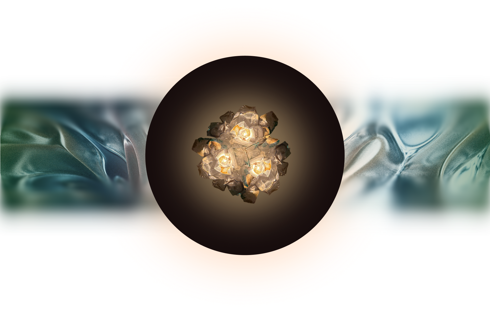
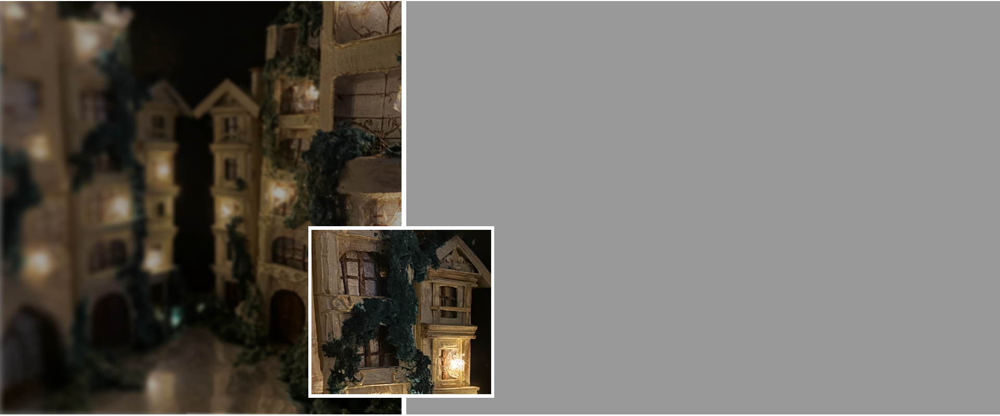
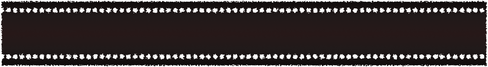
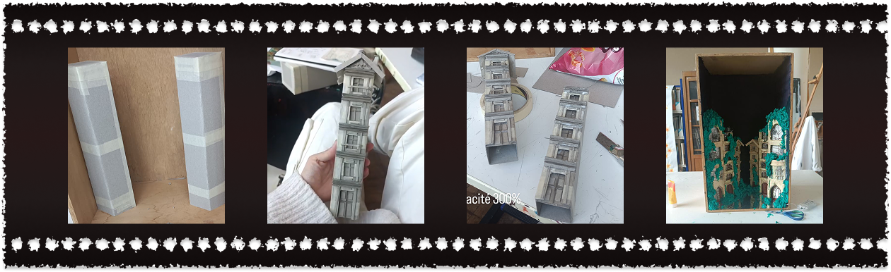
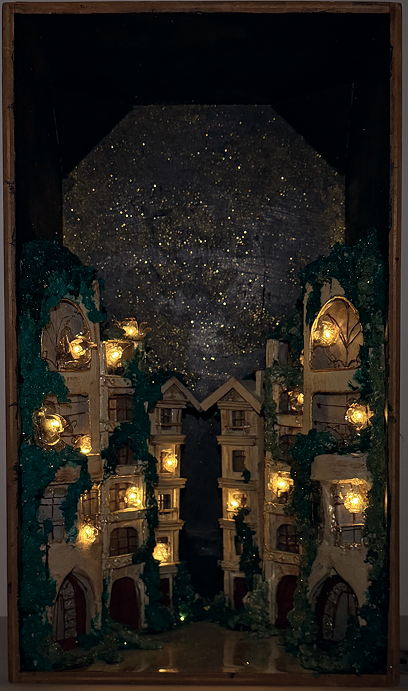
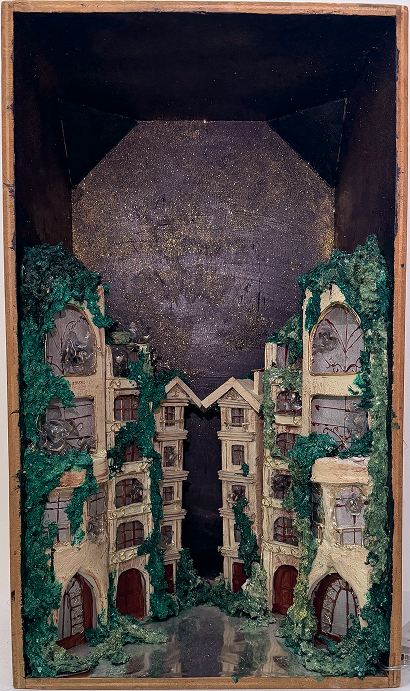
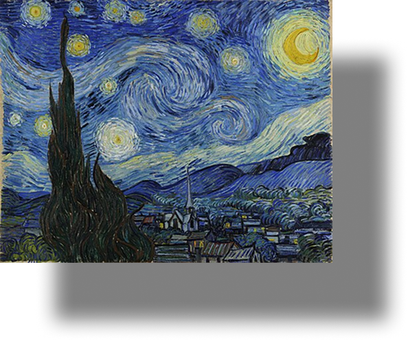
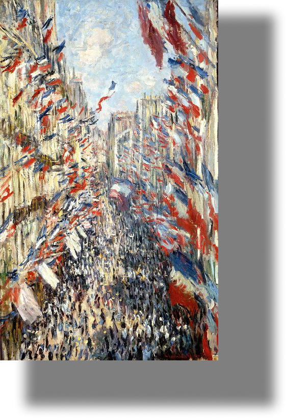
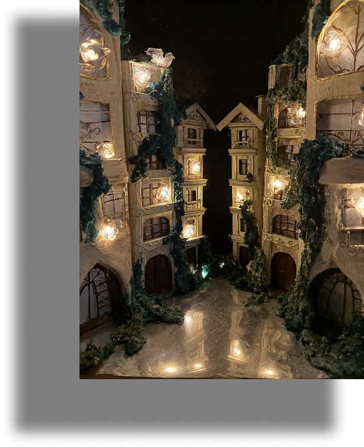

Alone



Couleur


Inspirations
Composition inspirée de Rue Montorgueil, Paris, fête du 30 juin 1878 de Claude Monet pour l’architecture urbaine, et de The Starry Night de Vincent van Gogh pour la palette de couleurs et l’atmosphère lumineuse.



“Alone” exprime une solitude sereine, où lumières et espace invitent à l’introspection et à l’évasion. Dans cette atmosphère calme et contemplative, l’absence de présence humaine n’est pas synonyme d’isolement, mais plutôt d’un moment suspendu, propice à la réflexion et au ressourcement. Les jeux de lumière sculptent l’espace et guident le regard, créant une sensation de profondeur et de douceur.
L’environnement devient alors un lieu de pause, presque hors du temps, où l’esprit peut vagabonder librement et où l’on se reconnecte à ses pensées et à ses émotions.